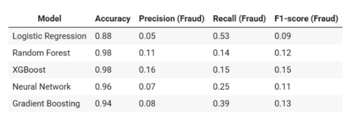
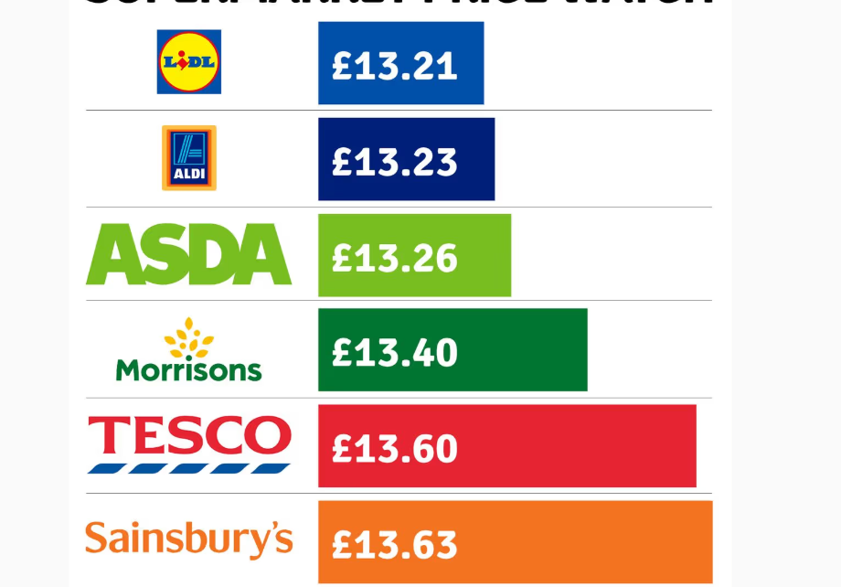
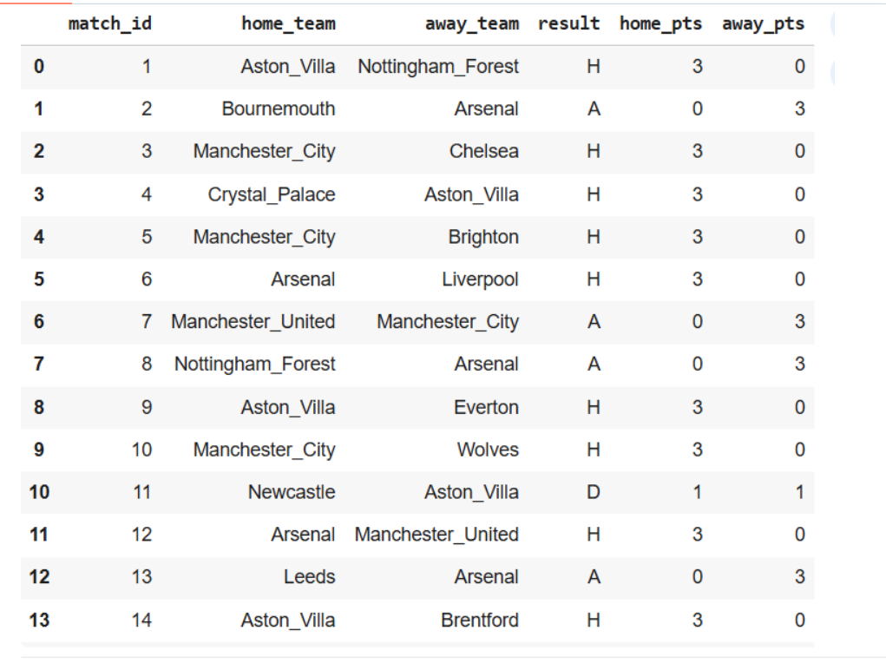
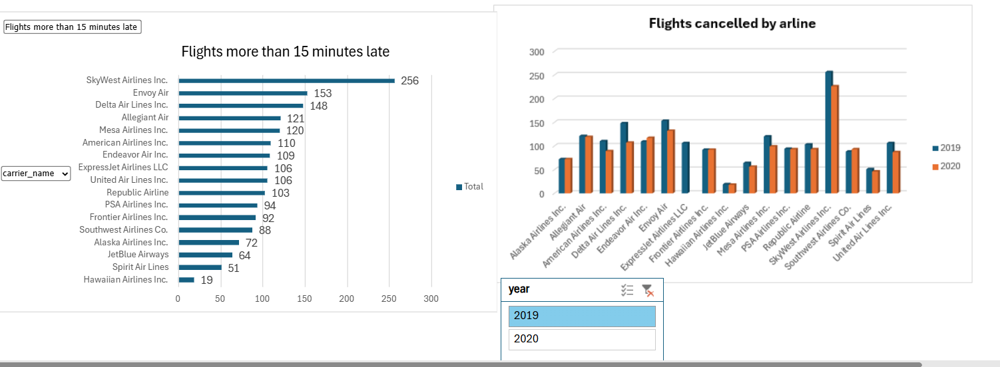

Transforming complex data into actionable insights, building intelligent dashboards, and creating AI-powered automation that helps businesses make smarter decisions.
I'm Edivaldo Andrade, a Data Analyst passionate about transforming data into meaningful insights that help organisations make better business decisions.
I hold a Bachelor's degree in Business Management and a Master's degree in Business Analytics, giving me a strong foundation in business strategy, data analytics, and technology.
As a Fraud Data Analyst, I analyse complex datasets, build interactive Power BI dashboards, automate reporting, and develop analytical solutions that support fraud prevention and operational efficiency.
Beyond analytics, I enjoy building AI-powered applications, workflow automations, and data-driven solutions that simplify processes and create measurable business value.
Technologies and tools I use every day.
A selection of projects showcasing my skills in data analytics, business intelligence, machine learning, and AI.

Machine learning model to detect fraudulent financial applications using Python, Scikit-learn, SMOTE, and predictive analytics.
View Project
SQL and Power BI dashboard analysing over 100,000 supermarket products to compare pricing trends across major UK retailers.
View Project
Predictive Excel model using football statistics, weighted scoring, and Monte Carlo simulation to forecast league standings.
View Project
Interactive dashboard analysing airline delays, cancellations, and airport performance using Power BI and Excel.
View Project